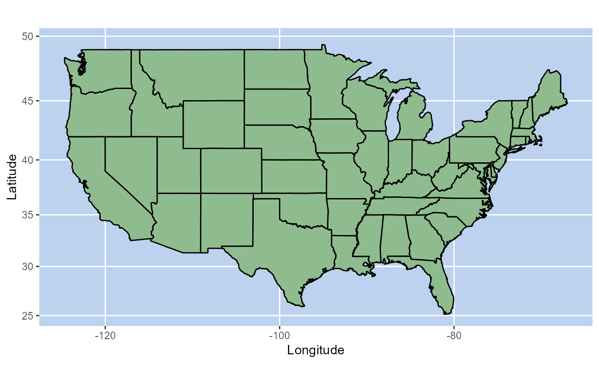
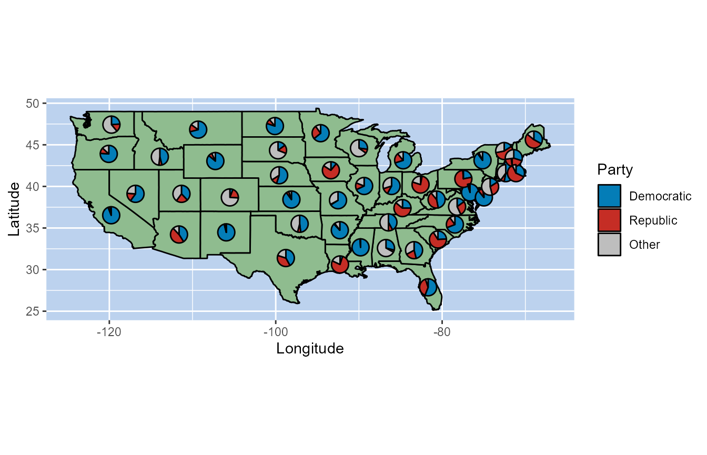
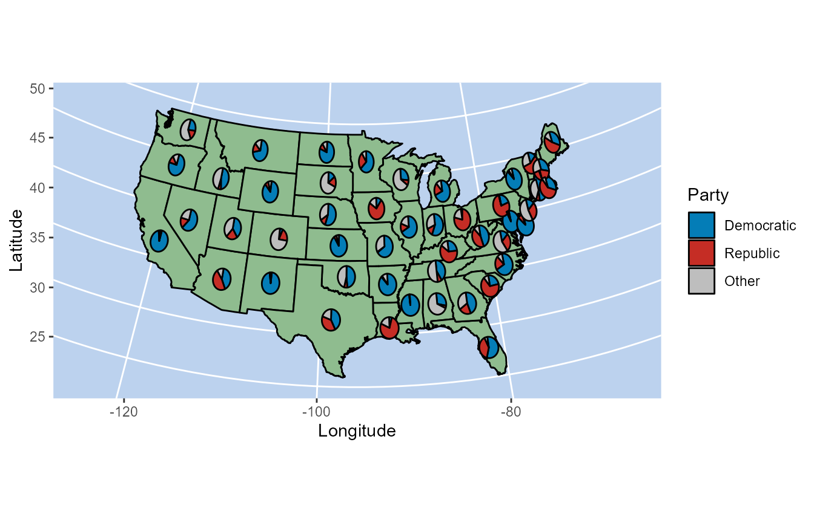
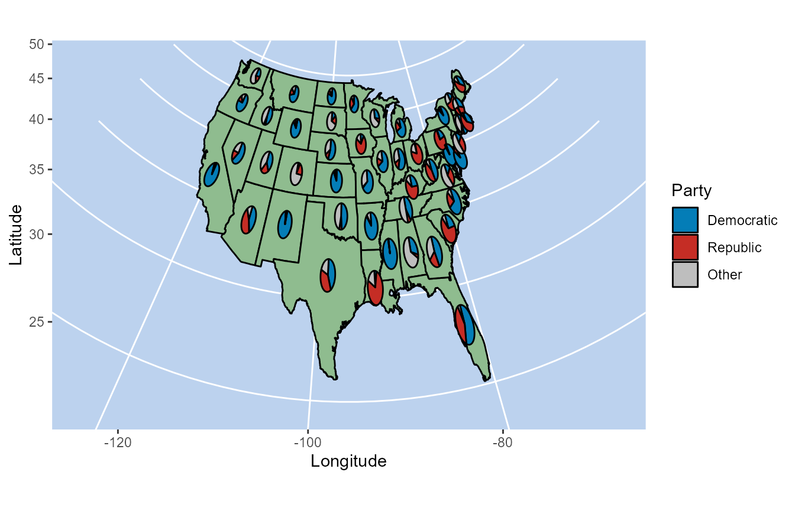
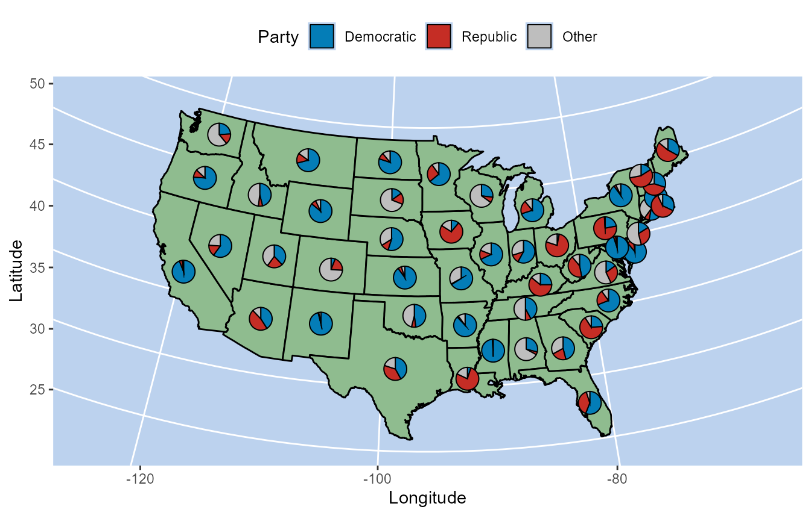
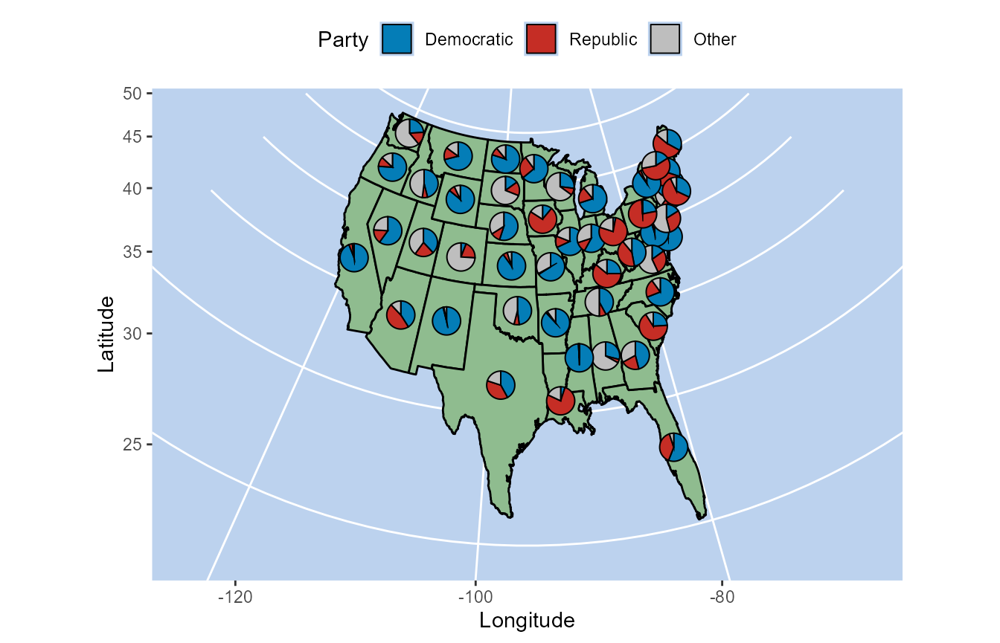

This example is one of the most useful applications of scatter pie-charts. Sections (states, counties, countries, etc.) on a map are overlaid with pie charts that show the proportions of specific attributes of the particular region on the map.
We show an example where the proportion of votes received by the Republic and Democratic parties in each US state is show for a hypothetical election.
These plots can be created easily with existing techniques too. However,
due to the pie-charts being tied with the plot dimensions it isn’t
possible to visualise the map in different geographical projections or
change the aspect ratio of the plot without converting the pie-charts
into ellipses. PieGlyph offers a solution to this problem.
Create data
Load Map data
Load the geographical information including the latitude and longitude for the states in USA.
states_boundaries <- map_data("state")
The dataset contains 15537 rows describing the geographical boundaries
each state (except Alaska and Hawaii) in USA. The long,
lat and region are the columns of interest to
us. long and lat describe the longitude and
latitudes respectively of the boundaries of the states, while
region contains the names of each state.
head(states_boundaries)
#> long lat group order region subregion
#> 1 -87.46201 30.38968 1 1 alabama <NA>
#> 2 -87.48493 30.37249 1 2 alabama <NA>
#> 3 -87.52503 30.37249 1 3 alabama <NA>
#> 4 -87.53076 30.33239 1 4 alabama <NA>
#> 5 -87.57087 30.32665 1 5 alabama <NA>
#> 6 -87.58806 30.32665 1 6 alabama <NA>
Create fake elections results each state in
states_boundaries data
set.seed(123)
# Get names of state names from map data
votes_data <- data.frame('State' = tolower(state.name))
# Simulate percentage of votes received in each state by the Democratic, Republic and other parties
votes_data <- votes_data %>%
mutate('Democratic' = round(runif(50, 1, 100)),
'Republic' = round(runif(50, 1, (100 - Democratic))),
'Other' = 100 - Democratic - Republic)
# Add the latitude and longitude of the geographical centers of the states to place the pies
votes_data <- votes_data %>%
mutate('pie_lat' = state.center$y,
'pie_long' = state.center$x)
# Filter out any states that weren't present in the map_data
votes_data <- votes_data %>% filter(State %in% unique(states_boundaries$region))
The dataset contains 48 rows describing the percentage of votes
different parties got in the respective state. State
describes the state name, Democaratic,
Republic and Other describe the percent of
votes the parties got in the state. pie_lat and
pie_long describe the geographical centre of each state
(this is where the pie will be placed on the plot).
head(votes_data)
#> State Democratic Republic Other pie_lat pie_long
#> 1 alabama 29 4 67 32.5901 -86.7509
#> 2 arizona 41 47 12 34.2192 -111.6250
#> 3 arkansas 88 2 10 34.7336 -92.2992
#> 4 california 94 4 2 36.5341 -119.7730
#> 5 colorado 6 20 74 38.6777 -105.5130
#> 6 connecticut 53 7 40 41.5928 -72.3573Create plot
Create map
map <- ggplot(states_boundaries, aes(x = long, y = lat)) +
# Add states and their borders
geom_polygon(aes(group = group),
fill = 'darkseagreen', colour = 'black')+
# Axis titles
labs(x = 'Longitude', y ='Latitude')+
# Blue background for the sea behind
theme(panel.background = element_rect(fill = 'lightsteelblue2'))+
# Coordinate system for maps
coord_map()
map
Add pie charts showing proportion of votes for different in each states
map +
# Add pie-charts for each state
geom_scatterpie(aes(y = pie_lat, x = pie_long),
data = votes_data,
cols = c('Democratic','Republic','Other'))+
# Colours of the pie sectors
scale_fill_manual(values = c('#047db7','#c52d25', 'grey'), name = 'Party')+
# Fix aspect ratio of plot
coord_fixed()
#> Coordinate system already present. Adding new coordinate system, which will replace the existing one.
As mentioned before, this works perfectly fine with other functions. However, we still need to use coord_fixed to fix the pie-charts. Further, if the user wishes to use a different map projection, the pie-charts will change dimensions depending on the projection
map +
# Add pie-charts for each state
geom_scatterpie(aes(y = pie_lat, x = pie_long),
data = votes_data,
cols = c('Democratic','Republic','Other'))+
# Colours of the pie sectors
scale_fill_manual(values = c('#047db7','#c52d25', 'grey'), name = 'Party')+
# Different map projection
coord_map("albers", lat0 = 45.5, lat1 = 29.5)
#> Coordinate system already present. Adding new coordinate system, which will replace the existing one.
map +
# Add pie-charts for each state
geom_scatterpie(aes(y = pie_lat, x = pie_long),
data = votes_data,
cols = c('Democratic','Republic','Other'))+
# Colours of the pie sectors
scale_fill_manual(values = c('#047db7','#c52d25', 'grey'), name = 'Party')+
# Different map projection
coord_map("gnomonic")
#> Coordinate system already present. Adding new coordinate system, which will replace the existing one.
As the pie-charts are created independent of the axes and plot
dimensions in PieGlyph, they are unaffected by any change
in the map projection
map +
# Add pie-charts for each state
geom_pie_glyph(aes(y = pie_lat, x = pie_long),
data = votes_data, colour = 'black',
categories = c('Democratic','Republic','Other'))+
# Colours of the pie sectors
scale_fill_manual(values = c('#047db7','#c52d25', 'grey'), name = 'Party')+
# Different map projection
coord_map('albers', lat0 = 45.5, lat1 = 29.5)
#> Coordinate system already present. Adding new coordinate system, which will replace the existing one.
map +
# Add pie-charts for each state
geom_pie_glyph(aes(y = pie_lat, x = pie_long),
data = votes_data, colour = 'black', radius = 0.5,
categories = c('Democratic','Republic','Other'))+
# Colours of the pie sectors
scale_fill_manual(values = c('#047db7','#c52d25', 'grey'), name = 'Party')+
# Different map projection
coord_map('gnomonic')
#> Coordinate system already present. Adding new coordinate system, which will replace the existing one.